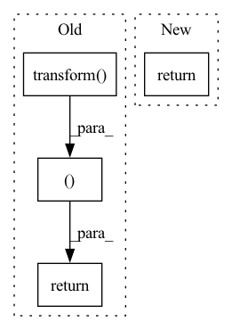

Pattern ID :33349
Before Change
// This can change the size of the picture and put the face in the approximate center
img = img.transform(img.size, Image.AFFINE, (1, 0, t[0] - w0/2, 0, 1, h0/2 - t[1]))
if mask is not None:
mask = mask.transform( mask.size, Image.AFFINE, (1, 0, t[0]-w0/2, 0, 1, h0/2 - t[1]))
w = (w0/s*102).astype(np.int32)
h = (h0/s*102).astype(np.int32)
// crop the image to 224*224 from image center
left = (w/2 - 112).astype(np.int32)
right = left + 224
up = (h/2 - 112).astype(np.int32)
below = up + 224
left_c = round(w0/w * left)
right_c = round(w0/w * right)
up_c = round(h0/h * up)
below_c = round(h0/h * below)
cropped_img = img.crop((left_c,up_c,right_c,below_c)).resize((render_size, render_size), resample=Image.BILINEAR)
// cropped_img = np.array(cropped_img)[:,:,::-1]
// cropped_img = np.expand_dims(cropped_img, 0)
img = img.resize((w,h),resample = Image.BILINEAR)
if mask is not None:
mask = mask.resize((w,h), resample = Image.BILINEAR)
lm = np.stack([lm[:,0] - t[0] + w0/2,lm[:,1] - t[1] + h0/2],axis = 1)/s*102
img = img.crop((left,up,right,below))
if mask is not None:
mask = mask.crop((left,up,right,below))
img = np.array(img)
if len(img.shape)==2:
img = np.expand_dims(img,-1)
img = np.repeat(img, 3, axis=-1)
else:
img = img[:,:,::-1] // Became BGR
img = np.expand_dims(img,0)
if mask is not None:
mask = np.expand_dims(mask,0)
lm = lm - np.reshape(np.array([(w/2 - 112),(h/2-112)]),[1,2])
return img, lm, mask, cropped_img, [left_c, right_c, up_c, below_c]
// resize and crop input images before sending to the R-Net
def Preprocess(img, lm, lm3D, mask=None, render_size=224):After Change
img = np.expand_dims(img,0)
lm = lm - np.reshape(np.array([(w/2 - 112),(h/2-112)]),[1,2])
return img, lm, cropped_img, [left_c, right_c, up_c, below_c, render_size, t[0]-w0/2, h0/2-t[1]]
def Preprocess(img, lm, lm3D, render_size=224, box=False):In pattern: SUPERPATTERN
Frequency: 4
Non-data size: 4
Instances Fragment ID: 96077849
Project Name: yeongjoonju/cfr-gan
Commit Name: 6840d7a2588a39fce22c2c80665f3796945ac43c
Time: 2022-02-27
Author: yj_ju@korea.ac.kr
File Name: mmRegressor/preprocess_img.py
M Class Name: AnonimousClass
N Class Name: AnonimousClass
M Method Name: process_img(5)
N Method Name: process_img(6)
M Parent Class:
N Parent Class:
M File Name: mmRegressor/preprocess_img.py
N File Name: mmRegressor/preprocess_img.py
M Start Line: 32
M End Line: 77
N Start Line: 47
N End Line: 67
Before Change
different transforms of the original images.
batch_a = torch.cat(
[self.transform( item[0]) .unsqueeze_(0) for item in batch], 0
)
batch_b = torch.cat(
[self.transform(item[0]).unsqueeze_(0) for item in batch], 0
)
labels = torch.tensor([item[1] for item in batch]).long()
fnames = [item[2] for item in batch]
return (torch.cat((batch_a, batch_b ), 0),
torch.cat((labels, labels), 0),
fnames)
After Change
torch.LongTensor(labels),
fnames,
)
return tuple_of_batches
class ImageCollateFunction(BaseCollateFunction): Fragment ID: 96077853
Project Name: lightly-ai/lightly
Commit Name: bdbfa7bcfb3d306ec78c4c1302199af1a0510eb2
Time: 2020-10-23
Author: philipp.m.wirth@gmail.com
File Name: lightly/data/collate.py
M Class Name: BaseCollateFunction
N Class Name: BaseCollateFunction
M Method Name: forward(2)
N Method Name: forward(2)
M Parent Class: nn.Module
N Parent Class: nn.Module
M File Name: lightly/data/collate.py
N File Name: lightly/data/collate.py
M Start Line: 53
M End Line: 63
N Start Line: 53
N End Line: 68
Before Change
item = self._dataset[index]
if isinstance(item, tuple):
return self.transform( item[0]), item[1]
def __len__(self) -> int:
return len(self._dataset) // type: ignore
After Change
Returns:
Tuple[torch.Tensor, torch.Tensor]: data and label at the specified index
return self._dataset[index]
def __len__(self) -> int:
return len(self._dataset) // type: ignore Fragment ID: 96077846
Project Name: hpi-xnor/bitorch
Commit Name: a98f938d313f05f5c633f8e97478609f67595d19
Time: 2021-09-24
Author: Jopyth@users.noreply.github.com
File Name: bitorch/datasets/base.py
M Class Name: BasicDataset
N Class Name: BasicDataset
M Method Name: __getitem__(2)
N Method Name: __getitem__(2)
M Parent Class: Dataset
N Parent Class: Dataset
M File Name: bitorch/datasets/base.py
N File Name: bitorch/datasets/base.py
M Start Line: 89
M End Line: 93
N Start Line: 150
N End Line: 150
Before Change
//we just set default loader with Pillow Image
sample = Image.open(abs_path).convert("RGB")
if self.transform is not None:
sample = self.transform( sample)
return sample, target
def __len__(self):
return self.len
After Change
def __getitem__(self, index):
path, target = self.samples[index]
abs_path = os.path.join(self.path_prefix, path)
return self._buildSampleFromPath(abs_path), target
def _buildSampleFromPath(self, abs_path):
//we just set default loader with Pillow Image Fragment ID: 96077845
Project Name: deepvac/deepvac
Commit Name: 8838968ad22564a7b97bd7e11a827438acf2689a
Time: 2020-08-14
Author: gemfield@civilnet.cn
File Name: lib/syszux_loader.py
M Class Name: FileLineDataset
N Class Name: FileLineDataset
M Method Name: __getitem__(2)
N Method Name: __getitem__(2)
M Parent Class: Dataset
N Parent Class: Dataset
M File Name: lib/syszux_loader.py
N File Name: lib/syszux_loader.py
M Start Line: 53
M End Line: 59
N Start Line: 56
N End Line: 57